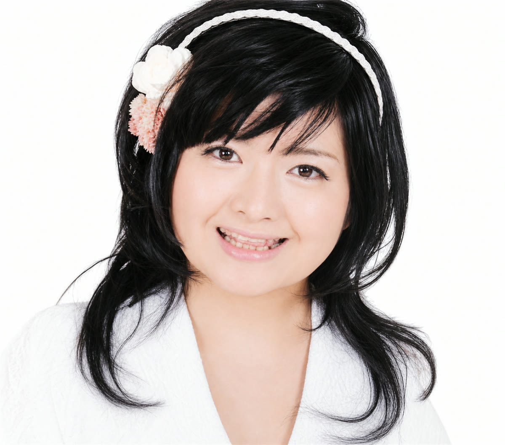
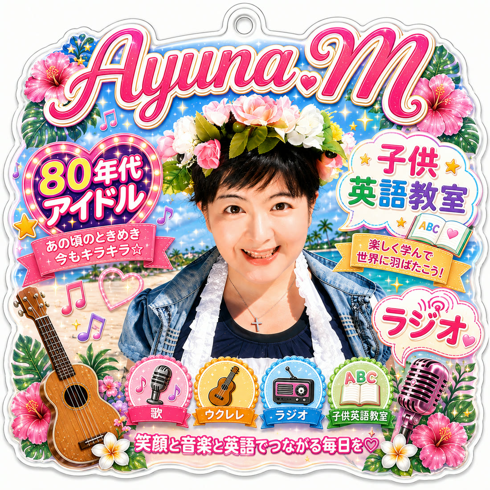
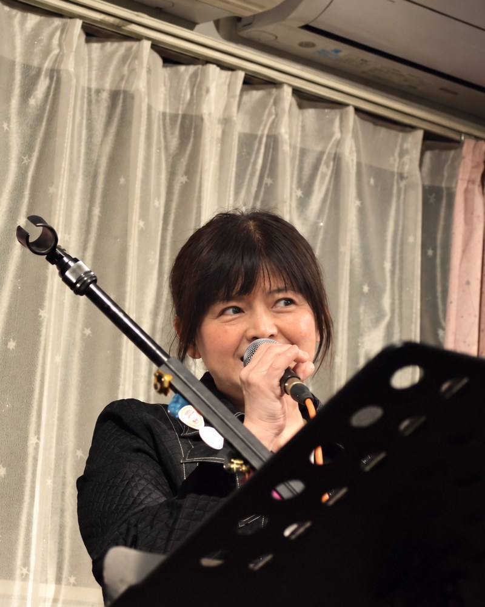
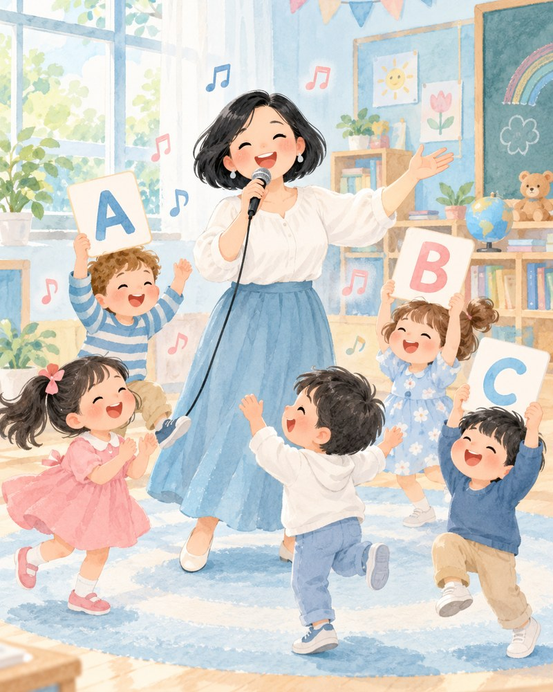
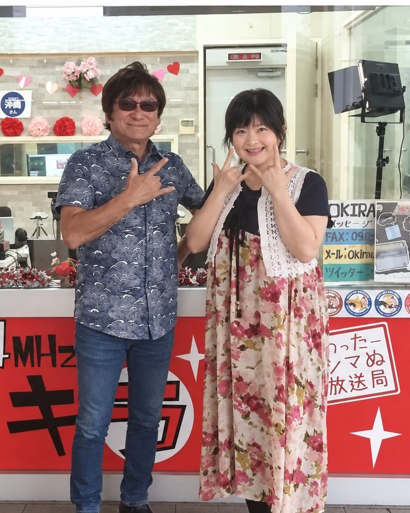

Singer / Ukulele & Sanrere / Radio
80年代アイドル
紫あゆなタイムマシーンに乗ってやってきた80年代のアイドルです。沖縄から、うたとウクレレをお届けします。


About Ayuna
うたと、ウクレレと、
沖縄のまいにち。
沖縄を拠点に、ライブやイベントで歌っています。歌う人であり、伝える人であり、教える人でいたいと思っています。
紫あゆな
シンガーへの目覚めを読むThree Pillars
紫あゆなの、3つの柱
歌うこと、楽しく学ぶこと、声で届けること。3つの活動をご紹介します。

01
歌
歌うことが大好き♡
80年代アイドルソングや沖縄の歌を中心に、ウクレレ・サンレレの弾き語りも楽しんでいます。ライブやイベントで、懐かしい歌から沖縄の歌まで、歌と笑顔をいっぱいお届けしています。月1回以上、さまざまな場所で活動中です♪

02
エンタメと教育
子ども向けのイベントで歌い、英語の教室も開いています。楽しいから覚える、覚えるから好きになる。その順番を大切にしています。
英語教室のページへ
03
ラジオ（情報発信）
オキラジとFM読谷で、ラジオの番組を担当しています。番組名と放送日、ゲスト出演のご相談は、ラジオのページでご案内しています。
ラジオのページへSocial
SNSでも、お届けしています
バナーを押すと、それぞれのページが開きます。